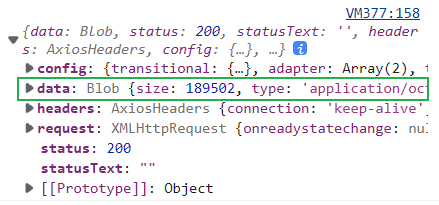
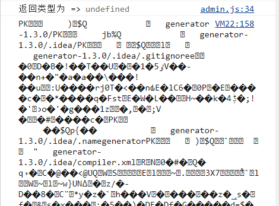
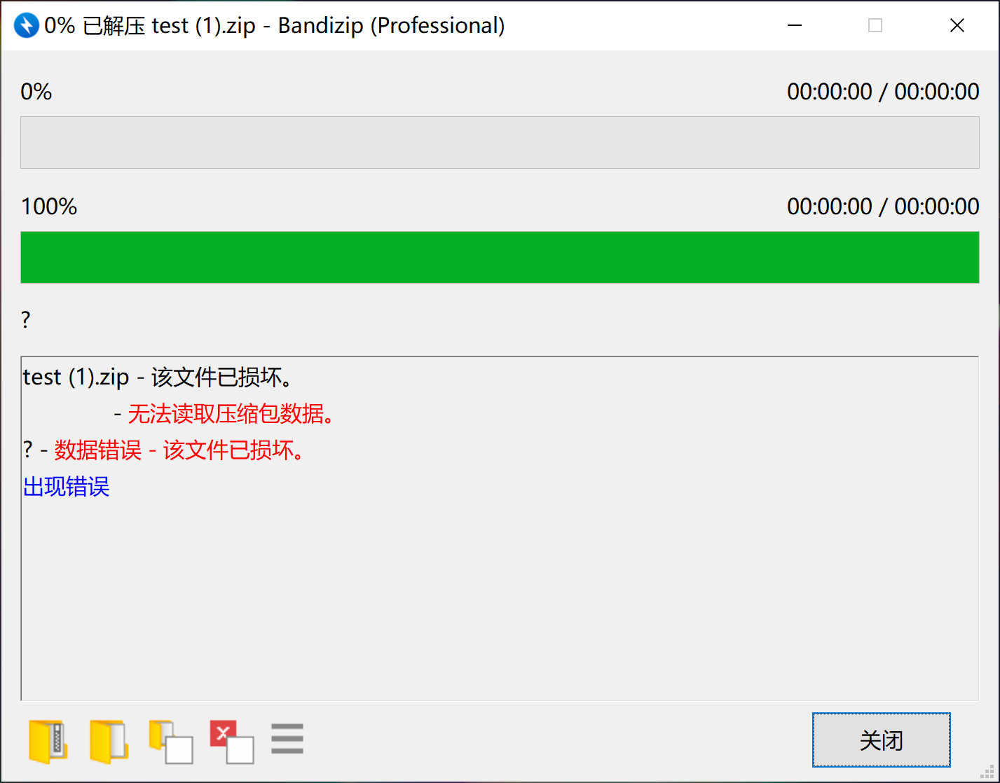

记录一次axios接收文件流的尝试。最近在写一个代码生成工具，涉及到服务器生成代码进行压缩，传给页面进行下载。
# 后端接口编写
后端使用 Spring Boot 进行接口响应
@PostMapping(value = "/project/code/download") | |
@ResponseBody | |
public void downloadCode(@RequestBody TProjectInfo pf, HttpServletResponse response) { | |
// 0. 保存此次生成的项目配置 | |
// 1. 生成源码文件 | |
// 2. 压缩文件 | |
// 3. 设置回复的一些参数 | |
// 4. 将压缩文件写入网络流 | |
log.info("request param: {}", pf); | |
projectService.saveOrUpdate(pf); | |
String filename = "./src/main/resources/templates/test/源码233.zip"; | |
File file = new File(filename); | |
// 如果文件存在，则进行下载 | |
if (file.exists()) { | |
BufferedInputStream bis = null; | |
OutputStream os = null; | |
try { | |
// 配置文件下载 | |
// 下载文件能正常显示中文 | |
response.setHeader("Content-Disposition", "attachment;filename=" | |
+ URLEncoder.encode(file.getName(), "UTF-8")); | |
response.setHeader("content-type", "application/octet-stream"); | |
response.setContentType("application/octet-stream"); | |
// 实现文件下载 | |
byte[] buffer = new byte[1024]; | |
bis = new BufferedInputStream(Files.newInputStream(file.toPath())); | |
os = response.getOutputStream(); | |
int i = bis.read(buffer); | |
while (i != -1) { | |
os.write(buffer, 0, i); | |
i = bis.read(buffer); | |
} | |
log.info("Download successfully!"); | |
} catch (Exception e) { | |
log.error("Download failed: {}", e.getMessage()); | |
} finally { | |
if (os != null) { | |
try { | |
os.close(); | |
} catch (IOException e) { | |
e.printStackTrace(); | |
} | |
} | |
if (bis != null) { | |
try { | |
bis.close(); | |
} catch (IOException e) { | |
e.printStackTrace(); | |
} | |
} | |
} | |
} | |
} |
接口返回 data：


# axios 接收并下载
assit.post('/project/code/download', obj, { | |
responseType: 'blob', // 此处必须设置 | |
onDownloadProgress: function (pe) { | |
// Do whatever you want with the native progress event | |
console.log(Math.round(pe.loaded / pe.total * 100) + '%') | |
}}).then(r => { | |
const blob = new Blob([r.data]); // { type: "application/vnd.ms-excel" } | |
let url = URL.createObjectURL(blob); // 创建一个临时的 url 指向 blob 对象 | |
// 创建 url 之后可以模拟对此文件对象的一系列操作，例如：预览、下载 | |
const a = document.createElement("a"); | |
a.download = obj.projectName + ".zip"; | |
a.style.display = "none" | |
a.href = url; | |
document.body.appendChild(a) | |
a.click(); | |
// 释放这个临时的对象 url | |
URL.revokeObjectURL(url); | |
document.body.removeChild(a) | |
}).catch(e => { | |
console.log(e) | |
}) |
# 错误记录
- axios 请求时未配置
responseType: 'blob'，虽然能正常下载，但是会出现数据格式错误：
